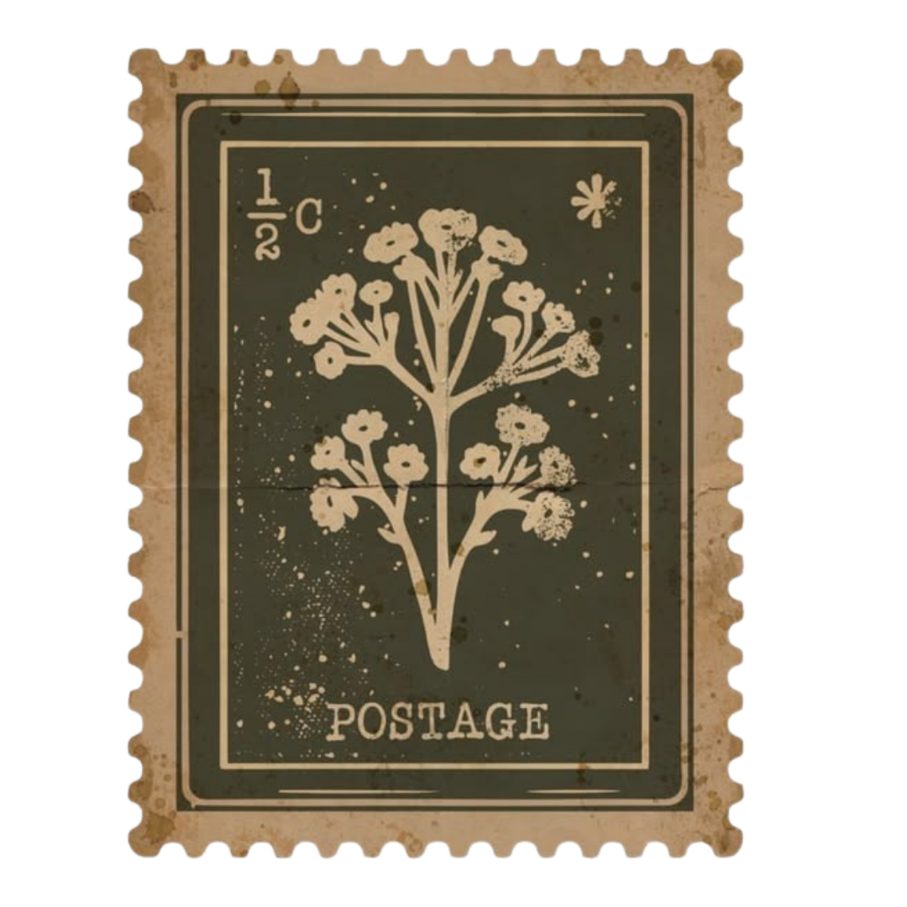

Some words were never spoken. Some feelings were never delivered.


You’ve reached the end of every letter.
These were the letters that were never sent.
But perhaps…someone still needed to read them.